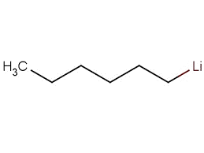

<div class="product1">
  <div class="container">
      <div class="row">
        <div class="col">
          <h2>n-Hexyllithium Manufacturers in India</h2>
        </div>
        <div class="col">
          
        </div>
      </div>
      <div class="my-4">
        <h3>Product Description:</h3>
        <ul>
          <li>CAS Number : 21369-64-2]</li>
          <li>Molecular Formula : C6H13Li</li>
          <li>Molecular Weight : : 92.1 g/mol</li>
          <li>In solvents : 2.3 M in Hexanee</li>
          <li>Appearance : Colorless solution</li>
        </ul>
      </div>
      <div class="my-4">
        <h3>Indication:</h3>
        <p><b>n-Hexyllithium</b> is a non-pyrophoric strong base that is primarily used in organic synthesis as a deprotonation reagent and lithiation reagent.</p>
      </div>
      <!-- <div class="my-4">
        <h3>Organometalics Expertise:</h3>
        <p><b>Organometallics</b> was established by <b>Mr. Talupula Venkateswar Rao</b> in the year 2022, our vision is to offer world-class pharma products to our global clients. We continiuosly involved in the manufacture of various Intermediates using lithium compounds especially <b>n-Butyllithium,</b> we have  various API intermediate products and also indulging in Contract manufacturing of API intermediates to reputed pharma companies viz.Viatris(formerly MYLAN LABS), Hetero drigs, USV Ltd etc.</p>

        <p><b>Organometallics</b> was established by <b> Mr. Talupula Venkateswar Rao </b> in the year 2022, our vision is to offer world-class pharma products to our global clients. We continiuosly involved in the manufacture of various Intermediates using lithium compounds especially <b>n-Butyllithium,</b> manufacturer with clients in both the domestic and international markets. we have  various API intermediate products and also indulging in Contract manufacturing of API intermediates to reputed pharma companies viz.Viatris(formerly MYLAN LABS), Hetero drigs, USV Ltd etc.</p>
        <p><b>Organometallics</b> is rapidly expanding by providing high-quality, low-cost products. We have world-class manufacturing facilities, which aids in the strategic development of innovative products. We are reliable <b>n-Hexyllithium Manufacturers in India,</b> providing the best products in the industry and ensuring on-time delivery.</p>
    </div> -->
  </div>
</div>
